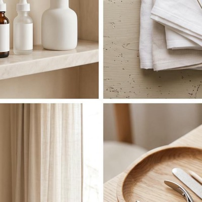
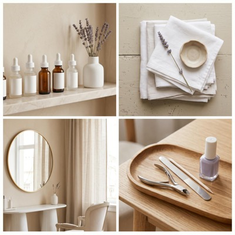
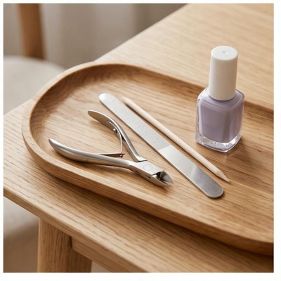

Wielostronicowe witryny, kampanie lejkowe i prowadzenie profili dla małych i średnich firm. Powstają szybko, bo mam do tego własny system — ale zanim cokolwiek trafi do sieci, sprawdzam to osobiście.
Reklama, która prowadzi donikąd, to spalony budżet. Lejek to zaplanowana droga: każdy etap ma jeden cel, a Ty widzisz, na którym z nich ludzie odpadają.
Rozwód bez sądowej wojny? W większości spraw da się szybciej i taniej. Sprawdź, jak.
Reklama pokazuje się tym, którzy realnie mają ten problem — nie wszystkim naraz.
Strona mówi o jego sprawie, nie o historii firmy. Jedna decyzja do podjęcia, nie pięć.
Krótki formularz i konkretna obietnica w zamian. Im mniej pól, tym więcej zgłoszeń.
Anna Kowalska — rozwód za porozumieniem. Prosi o telefon po 18.
11 zgłoszeń, koszt jednego: 34 zł. Najlepiej działa reklama nr 2.
Zgłoszenie trafia na Twój telefon od razu. Raz w tygodniu dostajesz rachunek zysków.
Na każdym etapie widać, ilu ludzi przeszło dalej — i to jest miejsce, w którym poprawiamy kampanię.
Strona to nie koszt, tylko najtańszy pracownik w firmie — jeśli ktoś ją tak zbuduje. Zanim napiszę pierwsze zdanie, sprawdzam, czego Twoi klienci naprawdę szukają w Google: jakich słów używają, o co pytają przez telefon, co mają konkurenci w okolicy.
Dopiero z tego powstaje struktura podstron — każda odpowiada na pytanie, które ktoś realnie wpisuje w wyszukiwarkę. Do tego techniczny fundament widoczności: tytuły, opisy, nagłówki, szybkość, wersja mobilna i wizytówka w Google.
Zobacz pełny zakres →Żadna złotówka nie idzie w reklamę na ślepo. Najpierw research: kto u Ciebie kupuje i dlaczego, czego się obawia przed decyzją, co obiecuje konkurencja i gdzie ma słabe miejsce.
Potem analiza tego, co już masz — ruchu, zapytań, wcześniejszych reklam. Dopiero na tym buduję plan lejka: etapy, komunikaty, budżet testowy. Skalujemy to, co się sprawdziło, zamiast podbijać post i mieć nadzieję.
Zobacz pełny zakres →Anna Kowalska — prosi o telefon po 18.
11 zgłoszeń, koszt jednego: 34 zł.
Nie „wrzucam postów". Zaczynam od sprawdzenia, co w Twojej branży faktycznie zatrzymuje ludzi w kciuku: jakie formaty działają, o co pytają w komentarzach, co publikuje konkurencja i czego nikt nie pokazuje.
Z tego powstaje plan na miesiąc — tematy, formaty, terminy. Ty dostarczasz materiał, który i tak powstaje w firmie, resztę robię ja. Plan zatwierdzasz, zanim cokolwiek trafi na profil.
Zobacz pełny zakres →


Najtańszy klient to ten, który wpisał pytanie w Google i trafił na Ciebie. Dlatego strona nie zaczyna się od projektu graficznego, tylko od sprawdzenia, czego Twoi klienci naprawdę szukają — i zbudowania podstron dokładnie pod te pytania.
Kancelaria w Rzeszowie: prawo cywilne, gospodarcze, rodzinne i spadkowe. Bezpłatna pierwsza konsultacja, jasna wycena przed rozpoczęciem sprawy.
Nie obiecuję pierwszego miejsca w Google — nikt uczciwy tego nie robi. Obiecuję fundament, bez którego żadne miejsce nie jest możliwe.
Automat pracuje szybko, ale nie ponosi odpowiedzialności. Dlatego w środku procesu stoi krok, który zawsze wykonuje człowiek — ja.
Zgłaszasz potrzebę — nową stronę, kampanię albo treści społecznościowe.
Pierwsza wersja powstaje na realnych danych o Twojej firmie, nie na szablonie.
Efekt trafia do mnie na Telegram. Nic nie idzie dalej bez mojego kliknięcia.
Do sieci trafia wyłącznie zatwierdzona wersja — z zapisem, co i kiedy się zmieniło.
Nie ma tu metafory. Gotowy efekt trafia na mój telefon i czeka. Dopóki nie kliknę „Zatwierdzam”, nic nie rusza dalej — ani strona, ani post, ani złotówka budżetu.
Dlatego nie biorę więcej projektów, niż jestem w stanie sam sprawdzić. Gdyby to kliknięcie stało się formalnością, cała reszta straciłaby sens.
Każda strona, kampania i post przechodzą przez ręczne zatwierdzenie, zanim zobaczy je ktokolwiek inny.
Jeśli system nie ma pewnych danych o Twojej firmie — pyta. Nie wymyśla faktów, cen ani opinii klientów.
Każda decyzja i publikacja są zapisane. Wiadomo dokładnie, co, kiedy i dlaczego się zmieniło.
Nie przyjmuję zlecenia, którego nie zdążę porządnie sprawdzić. Jeśli w danym miesiącu nie mam miejsca, mówię to od razu.
Realizacje, rozwiązania, potknięcia i to, co dokładnie robi system, zanim coś zatwierdzę. Jeśli zastanawiasz się nad współpracą, to najtańszy sposób, żeby mnie sprawdzić.
Nie musisz od razu decydować o współpracy. Wybierz, co Cię interesuje, a dostaniesz konkretny przegląd swojej firmy w sieci — z tym, co działa, co nie działa i co robi konkurencja.
Na jakie pytania Twoja strona odpowiada w Google — i na ile z tych, które zadają Twoi klienci.
Czy pieniądze, które wydajesz na reklamę, wracają — i gdzie po drodze wyciekają.
Co publikujesz, co z tego działa i czego brakuje na tle Twojej branży.
Uczciwie, żeby nie było niedomówień: robię to, bo liczę na to, że część osób zechce potem współpracować. Ale przegląd dostajesz niezależnie od tego, czy się na coś zdecydujesz — i możesz zrobić z nim, co chcesz, także oddać go innej firmie. Jedno zastrzeżenie: przyjmuję tyle zgłoszeń, ile zdążę porządnie przygotować. Jeśli akurat nie nadążam, powiem to od razu.
Formularz wyceny zajmuje dwie minuty. W odpowiedzi dostajesz konkretne widełki, nie ogólnikowe „to zależy”.